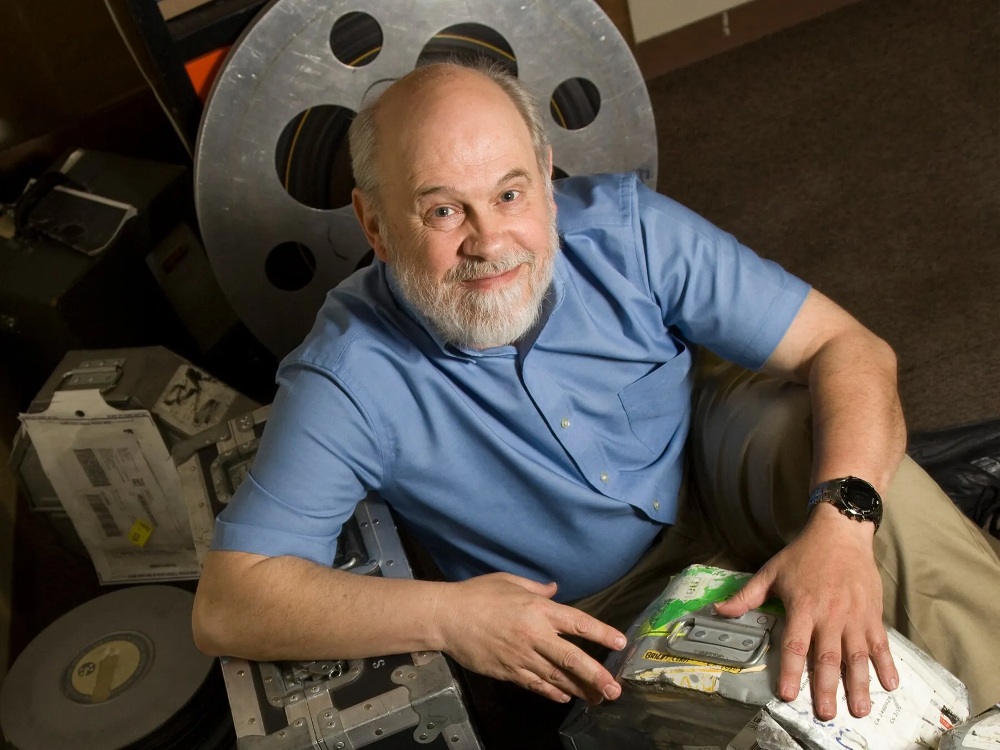

David Bordwell: Il pioniere dell'analisi formale
David Bordwell (1947 - 2024) è stato uno dei più grandi studiosi di cinema al mondo e professore alla University of Wisconsin-Madison. Prima di lui, i critici analizzavano i film quasi solo per capirne il "messaggio" nascosto o i temi psicologici. Bordwell ha cambiato tutto: ha introdotto l'approccio neo-formalista. In parole povere, ha insegnato a guardare come è fatto un film piuttosto che concentrarsi solo su cosa significa.
